Pathfinder
(2021) Procedurally generated puzzle Unity game written in C# that asks users to create the longest path between goals.
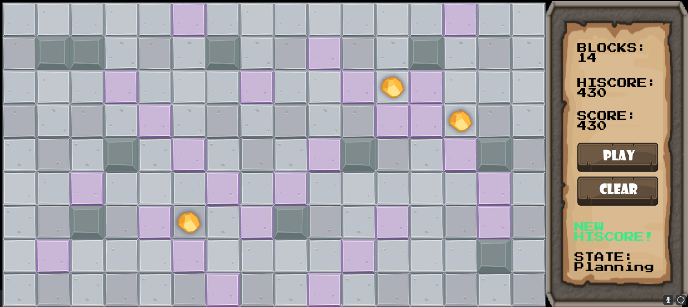
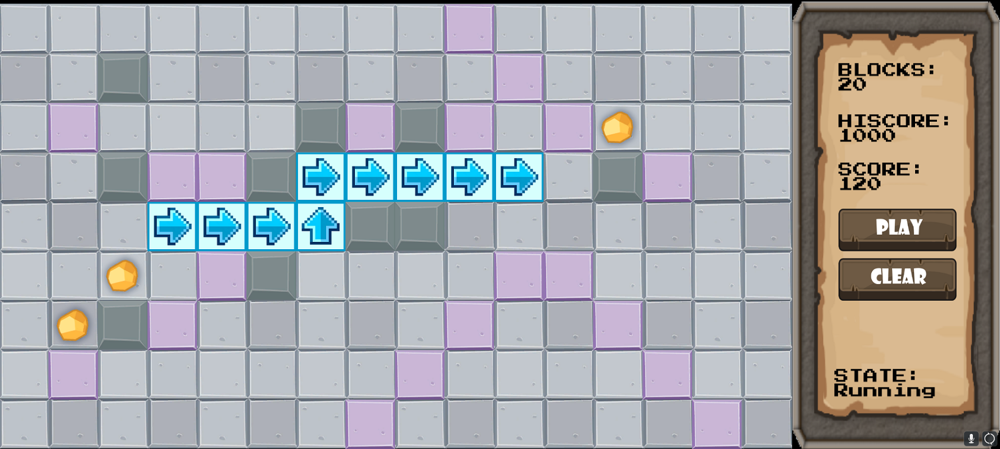
Unity, C#, Blender, Firebase, Animation, Game Design
Online WebGallery
(2019) An online multi-user WebGallery made with HTML, CSS, JavaScript, Node.js, Express, and NeDB. Secured using web security best practices and supports independent upload/storage of images, comments, and user accounts.
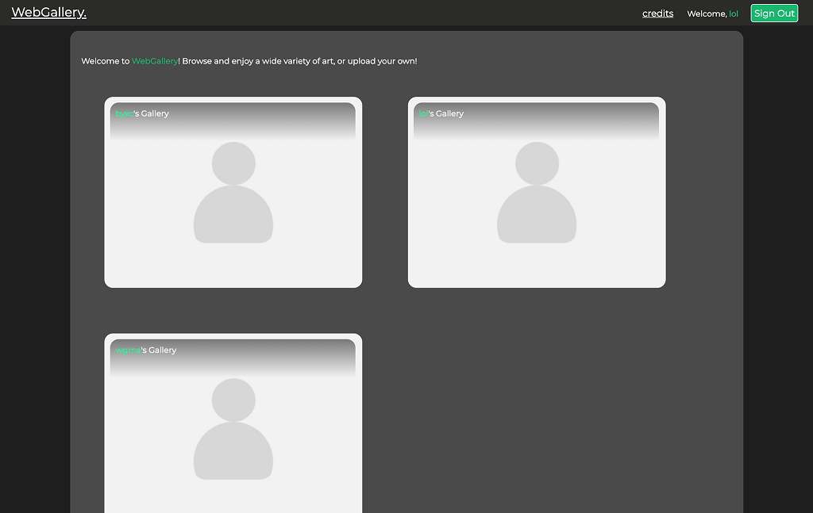
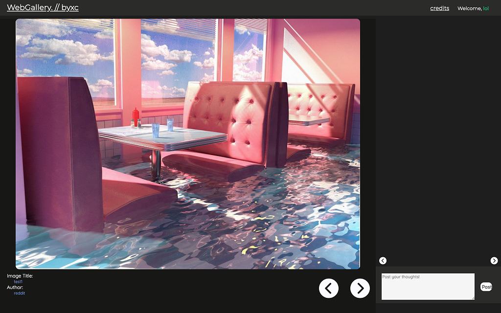
HTML, CSS, Node.js, JavaScript, Security, Express, Databases
Graphics Rendering Engine
(2018) A 2D/3D ray tracing graphics rendering engine that handles depth of field, reflection, refraction, antialiasing, multithreading, area light sources, soft shadows, and other cool features. Also contains the ability to render scenes using path tracing instead of ray tracing. Uses Phong Illumination model to compute lighting.
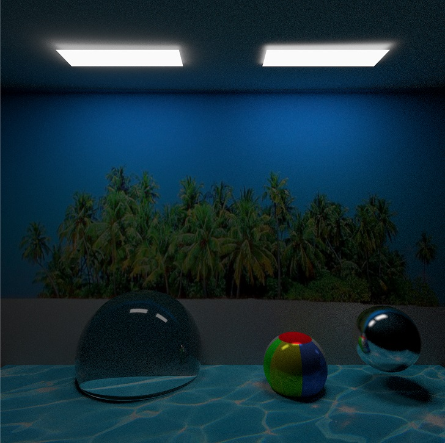
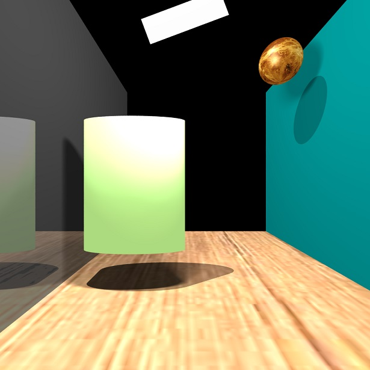
C, Ray Tracing, Path Tracing
Space2Vec
Website
-------
(2018) A project to classify transient images as supernovae. Tried various approaches such as feature engineering, using Random Forest, XGBoost,
augmented data sets, and convolutional neural networks to improve accuracy and decrease misdetection/false positive rates.
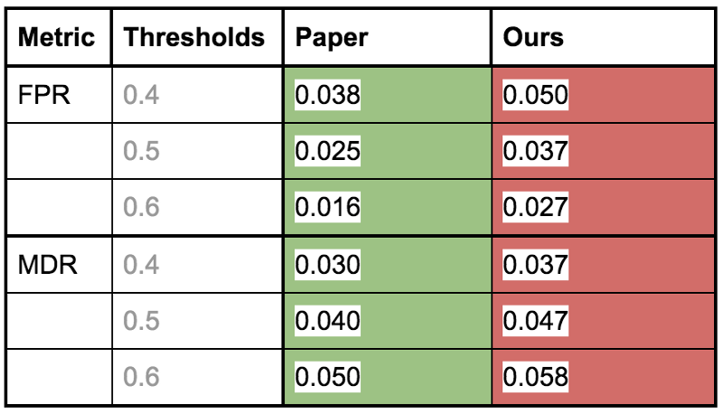
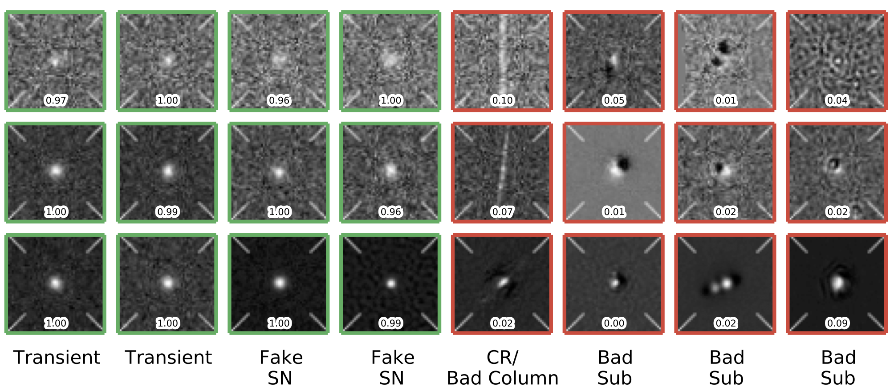
Python, Spark, Keras, Pandas, XGBoost, Convolutional Neural Network, Jupyter Notebook
Let Me Know
Website (Currently Down)
-------
(2017) Trusted news aggregation platform that provides succint summaries and sentiment analysis of trending news. Blacklists sensationalist and
politically biased sites while providing relevant social media insights and whitelisted further readings -- no more fake news!
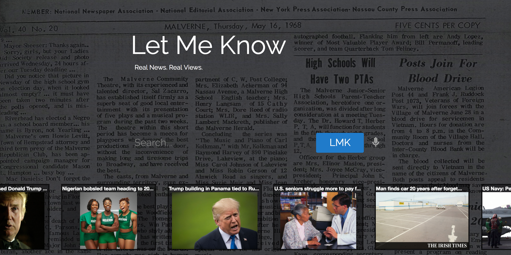
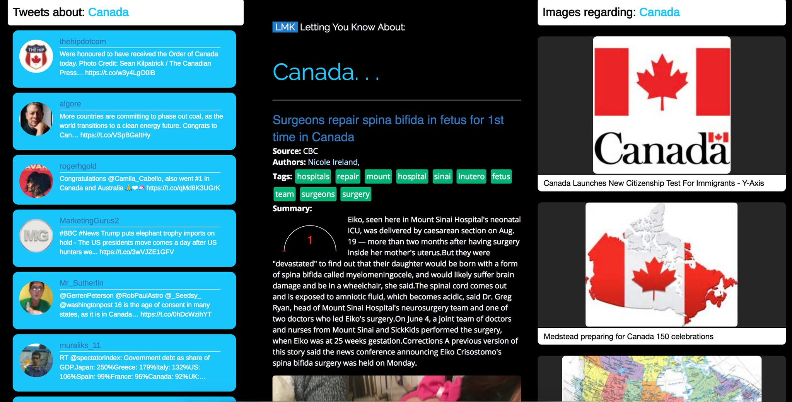
Python, Django, Angular, Reddit, facebook, Twitter, Bing, Microsoft Cognitive Services
Riven
JAR File
--------
(2016) High Fantasy adventure game with sprites from League of Legends, Fire Emblem, and RPG Maker XP. Challenge bosses, complete quests, earn unique and powerful armor and weapons.
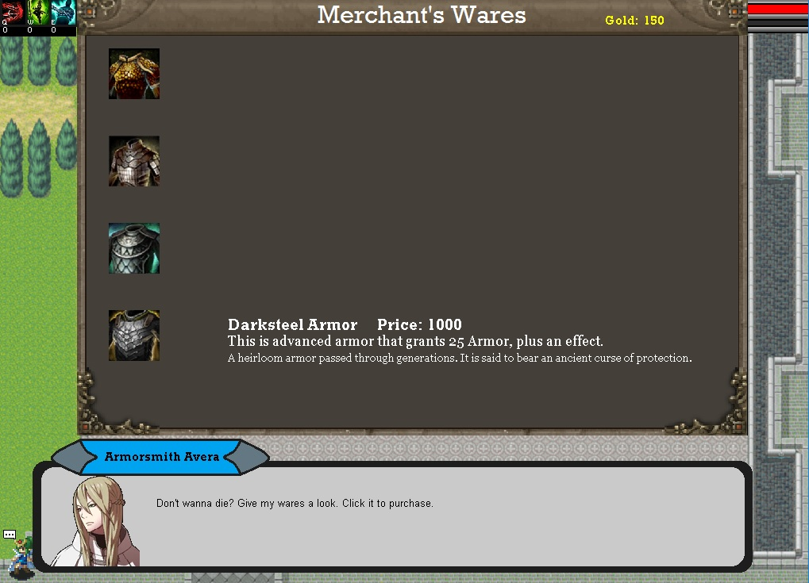
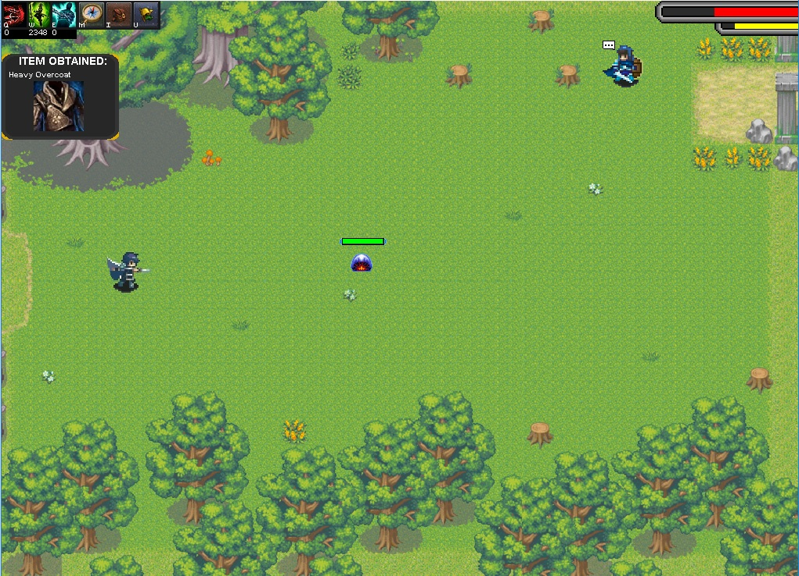
Java, Animation, Game Design
Trash Smash
JAR File
--------
(2015) Galaga-inspired shooter made for the City of Toronto's Waste Management Services. Play as a spaceship using different types of guns (recycle, garbage, compost) to defeat the invading trash!
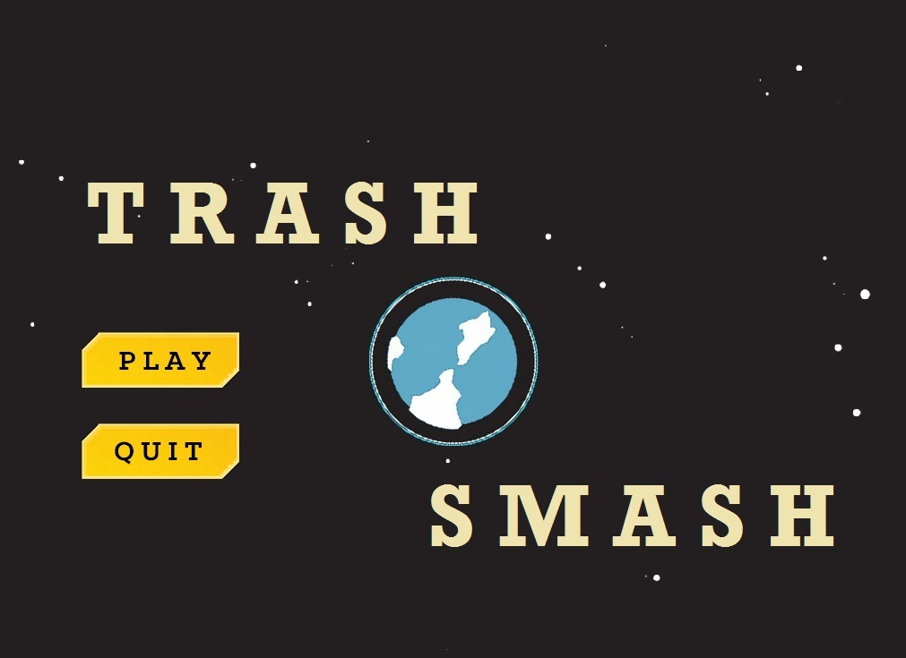

Java, Animation, Multithreading, Game Design
More projects...
Check out the GitHub